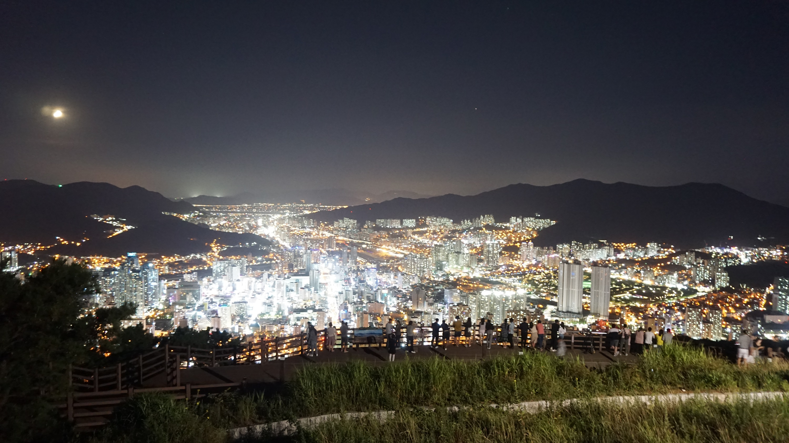

BUSAN · NIGHT HERITAGE01 / 05
427M ABOVE THE CITY
불빛으로
이어진 부산
과거의 봉화부터 오늘의 야경까지
황령산 봉수대가 품은 두 개의 시간
SWIPE TO EXPLORE

427M ABOVE THE CITY
과거의 봉화부터 오늘의 야경까지
황령산 봉수대가 품은 두 개의 시간
조선의 가장 빠른 알림
바다의 위급한 소식을
연기와 불로 다음 봉수대에 전달했습니다.
한 자리에서 만나는 부산
도심 한가운데 427m, 부산의 낮과 밤을 가장 넓게 만나는 자리.
놓치지 않는 관람법
노을부터 야경까지
한 번에 감상
정상은 쌀쌀해요
겉옷 챙기기
어두운 길에는
휴대폰 조명
주말 일몰 전후
혼잡 유의
전망 공간은 무료 · 상시 개방 * 현장 상황은 방문 전 확인
도시의 역사와 야경이 만나는 곳,
황령산 봉수대
PHOTO · 부산광역시 ㅣ DESIGN · MOTION CARD NEWS
← → 키로 넘기기 · URL에 ?card=3&static=1을 붙이면 개별 정지 화면